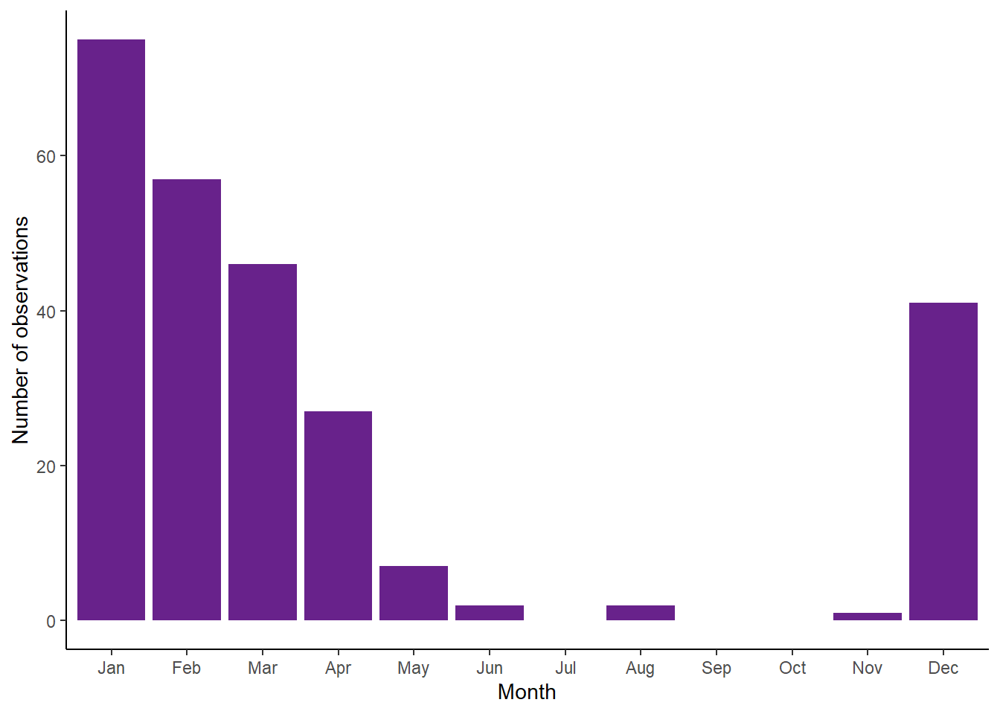

![]()
Where is the black soldier fly from?
The black soldier fly originates from the Americas, first described by Linaeus in 1758. It’s natural habitat is warm and humid allowing for several generations per year. It is now very cosmopolitan, found across the world.
In New Zealand, the species was first observed and collected in Auckland in 1956 and since then the adult flies have been observed in the North Island and the top of the South Island.

At the boundaries of its range, the black soldier fly is known to overwinter in the pupal stage. In these areas it is likely that there is only one generation per year.
Citation
BibTeX citation:
@online{birrell2025,
author = {Birrell, Neil},
title = {Black Soldier Fly in {New} {Zealand}},
date = {2025-10-01},
url = {https://neilbirrell.com/posts/2024_01_22_bsf_at_home/},
langid = {en}
}
For attribution, please cite this work as:
Birrell, Neil. 2025. “Black Soldier Fly in New Zealand.”
October 1, 2025. https://neilbirrell.com/posts/2024_01_22_bsf_at_home/.